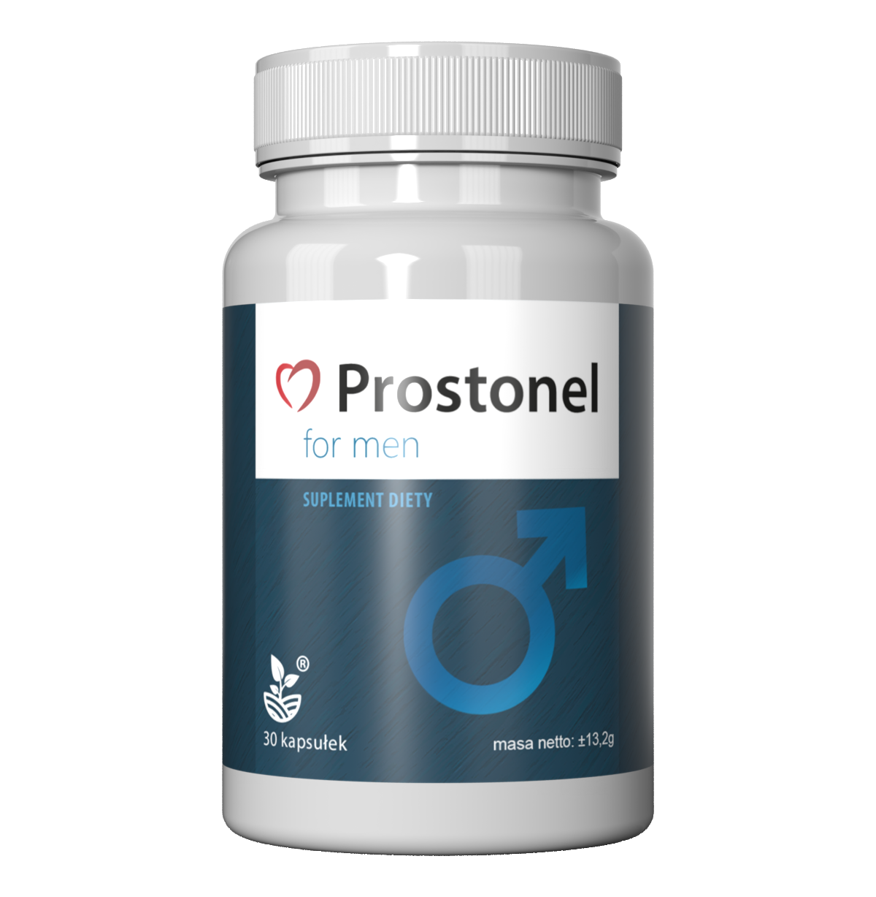

Coraz więcej mężczyzn po 40 roku życia zmaga się z problemami prostaty. Najczęstsze objawy to:
Wielu lekarzy twierdzi, że pierwszym krokiem powinna być zmiana stylu życia oraz wsparcie naturalnymi składnikami.
Sprawdź oficjalną stronęPan Marek (52 lata) przez kilka lat ignorował pierwsze objawy. Budził się nawet 4 razy w nocy, aby skorzystać z toalety.
"Na początku myślałem, że to normalne. Dopiero kiedy zaczęło to wpływać na mój sen i pracę, postanowiłem coś z tym zrobić."
Po konsultacji i wielu próbach różnych metod trafił na naturalny suplement, który zawiera składniki wspierające prawidłową pracę prostaty.
Po kilku tygodniach zauważył pierwsze zmiany:
Też miałem problem z częstym oddawaniem moczu. Po kilku tygodniach stosowania jest dużo lepiej.